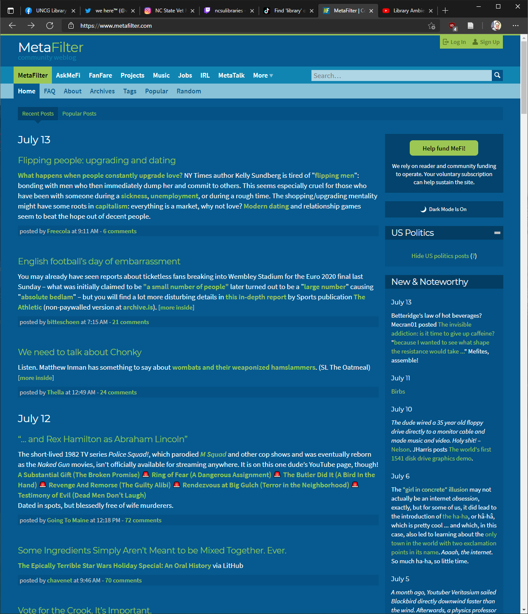

MetaFilter
Overview
MetaFilter was started as a “community weblog” in 1999 and has been a vibrant community ever since. It is essentially a general forum (text-only, no images allowed), with several, more specific sub-forums, including a very popular section called AskMetaFilter, where users can ask (almost) any question, and responses are strictly moderated to cut down on chit-chat and focus on answers. I have personally been a member since 2005, and many active members have been on the site for over 20 years.
Strengths & Weaknesses
MetaFilter is a true community, with its own set of annual holidays, gift exchanges, collaborative art projects, and an active in-person “meetup” culture, with one section of the site devoted to facilitating meetups. One powerful tool for building site culture is the sub-forum MetaTalk, which is strictly limited to discussions about the site itself and its policies, procedures and moderation, and helps ensure users’ concerns are addressed by ownership.
Recommendations
Libraries obviously do not need to develop a presence on MetaFilter (though there are many library professionals who are members (the MeFibrarians, as we are called), including well-known library blogger and speaker Jessamyn West, who was the first paid moderator of the site. It can serve as a good example of a well-moderated discussion forum.
What can we learn?
Moderation on MetaFilter requires the equivalent of approximately 7 full-time moderators, for a site whose active membership is likely under 4000 at this point. It is a time (and money) intensive undertaking, but it is held up frequently as an example of how a user-defined culture can thrive with thoughtful and judicious moderation - an ideal for any library-centric virtual community to aspire to.